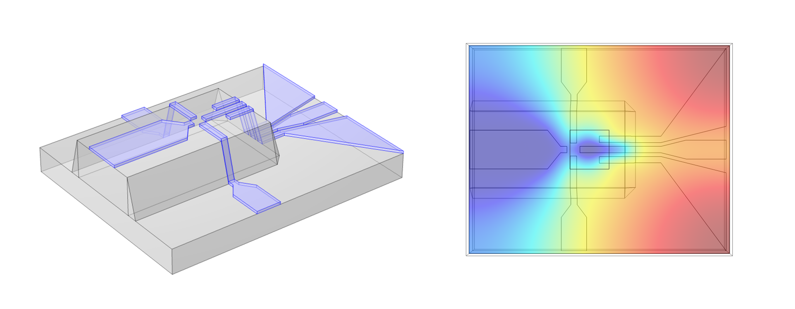
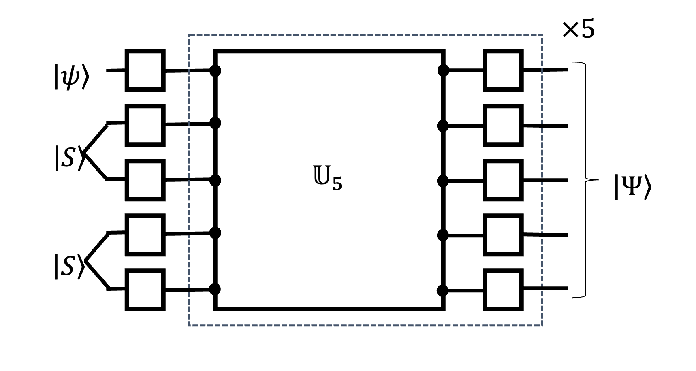
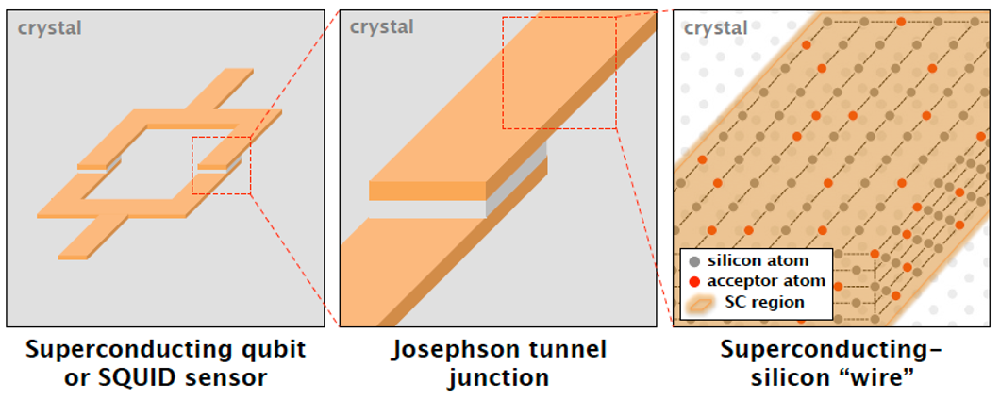

Theoretical Research on Quantum Computing
Quantum computing is a budding technology that will do computations that can’t be done in classical supercomputers (quantum supremacy). It will revolutionize the scientific research and the society. While still in its early stage, commercial quantum computers are already emerging. Here are some of my research directions.
Semiconductor Spin Qubits

- Induced quantum dot qubit devices in semiconductor
- Hole-based qubits in semiconductor
- Always-on Exchange Only (AEON) Qubit
- Noise-insensitive gate operations
- Relevant publications:
- Appl. Phys. Lett. 114, 152105 (2019)
- Phys. Rev. B 97, 155402 (2018)
- Phys. Rev. B 93, 121410(R) (2016)
Superconducting Qubits

- Composite superconducting qubit design for baseband-only gate operations
- New types of Josephson junctions for superconducting qubits
- Relevant publications:
- Phys. Rev. X 10, 041051 (2020)
- Nat. Commun. 7, 11059 (2016)
Quantum Architectures and Algorithms
- Quantum bus architecture for multi-qubit entaglement
- Useful applications of currently available quantum computers (VQE, QAOA, etc)
- Quantum Machine Learning using Tensor Network
- Relevant publications:
- Phys. Rev. Lett. 106, 180503 (2011)
- Phys. Rev. B 87, 155405 (2013)
Quantum Materials for Quantum Computing
- Superconducting Silicon
- 2D materials
- Topological materials
- Relevant publications:
- Phys. Rev. B 108, 125435 (2023)
- Nat. Commun. 5, 4225 (2014)